TASCAN DR-100MKII
Sat, 26 Nov 2011 18:01:55 GMT
Hacía tiempo que no hablábamos por aquí de grabadoras portátiles de audio. Y no de unas cualquiera, sino de aquellas de alta calidad, pensadas para entornos profesionales y con grabación tasas de grabación de alta gama. Es el caso de la nueva TASCAN DR-100MKII, un equipo pensada por los profesionales del audio, a los que sin duda no dejará indiferentes. Equipado con un panel LCD retroiluminado donde podrás comprobar en todo momento el estado de la grabación, este DR-100MKII incorpora nada menos que 4 micrófonos (Stereo Cardioid y Omni Condenser),...
Hacía tiempo que no hablábamos por aquí de grabadoras portátiles de audio. Y no de unas cualquiera, sino de aquellas de alta calidad, pensadas para entornos profesionales y con grabación tasas de grabación de alta gama. Es el caso de la nueva TASCAN DR-100MKII, un equipo pensada por los profesionales del audio, a los que sin duda no dejará indiferentes.
Equipado con un panel LCD retroiluminado donde podrás comprobar en todo momento el estado de la grabación, este DR-100MKII incorpora nada menos que 4 micrófonos (Stereo Cardioid y Omni Condenser), con grabación a tasas que van desde los 44.1k hasta los 96k en formato WAV. Si se quiere menos calidad, también permite la grabación en MP3. Equipado con conversores A/D AKM Audio4Pro con más de 100dB señal-ruido, la calidad del sonido que captemos con este equipo está mas que asegurada.
El sistema se completa con altavoz integrado, acabado a prueba de golpes, polvo y maltratos, así como tomas y salidas de audio profesionales. En definitiva, un equipo a prueba de bombas, que será el preferido para cualquier profesional del sonido.
Características
- 4 micrófonos
- 44.1k to 96k- sampling rates
- Grabación en formatos WAV y MP3
- Tomas XLR con modo Phantom
- Preamplificador de micrófono con 60dB de ganancia
- Conversor A/D Premium AKM Audio4Pro
- Altavoz integrado
- Panel LCD retroiluminado
- Control Remoto
- Slot para tarjetas SD
Precio y disponibilidad
Este nuevo equipo saldrá al mercado a finales de este mismo mes de noviembre, con un precio recomendado de unos 390€ al cambio.
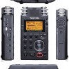
Optoma HD83S1: 3D de altura
Sat, 26 Nov 2011 01:03:44 GMT
El reconocido fabricante Optoma se lanza de lleno a por los proyectores 3D de gama alta. Y lo hace por todo lo grande, con el nuevo equipo con el que estrenará el año 2012: el proyector DLP HD83S1, un equipo basado en tecnología DLP, que con resolución nativa Full HD y 1500 lúmenes, hará las delicias de los cinéfiles. Este nuevo HD83S1 permitirá a los aficionados más exigentes disfrutar en casa de los estrenos 3D como si te encontraras en la mejor de las salas cinematográficas. Características Resolución nativa Full...
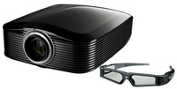
El reconocido fabricante Optoma se lanza de lleno a por los proyectores 3D de gama alta. Y lo hace por todo lo grande, con el nuevo equipo con el que estrenará el año 2012: el proyector DLP HD83S1, un equipo basado en tecnología DLP, que con resolución nativa Full HD y 1500 lúmenes, hará las delicias de los cinéfiles. Este nuevo HD83S1 permitirá a los aficionados más exigentes disfrutar en casa de los estrenos 3D como si te encontraras en la mejor de las salas cinematográficas.
Características
- Resolución nativa Full HD
- Sistema 3D DLP Link con emisor externo
- Brillo de 1600 lúmenes
- Contraste del orden de los 50.000:1
- Bajo nivel de ruido (25 dB)
- Efecto Arco Iris reducido
- Mando a distancia
- Gafas 3D incluidas con el equipo
Precio y disponibilidad
Este nuevo proyector englobado dentro de la gama alta de Optoma, hará su aparición en enero de 2012, por 400.000 yenes, unos 3900€ al cambio. Vamos, para bolsillos deshaogados y amantes de las últimas tecnologías del momento.
HDCP crackeado
Fri, 25 Nov 2011 22:01:17 GMT
Seguramente no lo sepáis (puesto que tampoco es imprescindible saberlo), pero cuando veis cualquier película en vuestro televisor o conectáis la consola al monitor de turno, toda señal que se transmite entre uno y otro equipo están codificadas. Y es que Hollywood y la industria del entretenimiento estaban más que asustadas con la altísima calidad de copia que puede dar la Alta Definición, por lo que impusieron que estas señales se codificaran con un sistema llamado HDCP. Pues como no hay mal que cien años dure, (ni sistema de encriptación...
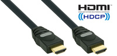
Seguramente no lo sepáis (puesto que tampoco es imprescindible saberlo), pero cuando veis cualquier película en vuestro televisor o conectáis la consola al monitor de turno, toda señal que se transmite entre uno y otro equipo están codificadas. Y es que Hollywood y la industria del entretenimiento estaban más que asustadas con la altísima calidad de copia que puede dar la Alta Definición, por lo que impusieron que estas señales se codificaran con un sistema llamado HDCP. Pues como no hay mal que cien años dure, (ni sistema de encriptación que no caiga), parece ser que hackers de la Universidad Alemana de Ruhr, han crackeado el sistema de codificación HDCP.
Lo peor de todo, es que la fabricación del equipo necesario es realmente barata (unos 200$), por lo que dentro de pocos meses seguramente veremos cajas mágicas por diversas tiendas de Internet tiradas de precio. Sólo se necesita un puerto HDMI, un chip Xilinx Spartan-6 FPGA y un puerto serie RS232 y listo!. Se conecta la “cajita” entre el televisor/monitor y el PC o reproductor Blu-ray/multimedia y se acabó. Todo lo que salga del equipo será convenientemente “capturado” por la “cajita” con calidad digital 1:1 y sin rastro de señal HDCP.
Evidentemente todo esto es más una prueba de concepto que algo realmente útil para el común de los mortales, que no tienen más que ripear el Blu-ray de turno con cualquiera de los muchos programas capaces de hacerlo, para conseguir una copia exacta del blockbuster Hollywoodiense de turno. Pero viene a demostrar lo ya sabido desde hace años: no hay sistema de encriptado que cien años dure…
Playstation 4 coincidiría con el lanzamiento de la próxima Xbox, ¿estrategia defensiva de Sony?
Fri, 25 Nov 2011 19:33:17 GMT
Concepto de Playstation 4, por Tai Chiem Parece lógico que Sony no quiera repetir patrones del pasado, como el ocurrido con Playstation 3, que llegó al mercado un año más tarde que la competencia, cediendo un terreno que jamás recuperaría en cuanto a ventas globales. La nueva estrategia de Sony sería seguir muy de cerca los movimientos de Microsoft, para planificar el lanzamiento de Playstation 4 en un marco temporal cercano al de la próxima Xbox. En una entrevista con el sitio web sobre videojuegos Eurogamer, el CEO de la...
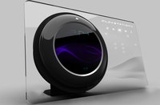Concepto de Playstation 4, por Tai Chiem
Parece lógico que Sony no quiera repetir patrones del pasado, como el ocurrido con Playstation 3, que llegó al mercado un año más tarde que la competencia, cediendo un terreno que jamás recuperaría en cuanto a ventas globales. La nueva estrategia de Sony sería seguir muy de cerca los movimientos de Microsoft, para planificar el lanzamiento de Playstation 4 en un marco temporal cercano al de la próxima Xbox. En una entrevista con el sitio web sobre videojuegos Eurogamer, el CEO de la división Europea de Sony Jim Ryan, comentaba específicamente este deseo de la compañía, con el fin de evitar un comienzo complicado como en 2006.
Creo que consideraríamos algo no deseable llegar bastante más tarde que la competencia (hablando de la próxima Playstation)
Y de nuevo volvemos al causante de esta posible aceleración de los acontecimientos; con la nueva Nintendo Wii U a tan solo un año de ser lanzada, la ansiedad en las sedes de Microsoft y Sony crece por momentos, y entre tantos rumores de una posible “Xbox 720” para 2013, la firma nipona estaría trabajando muy duro para terminar el hardware cuanto antes, algo que podría repercutir no solo en un prematuro anuncio y un lanzamiento precipitado, sino también en el precio de la consola, como en la pasada generación. Esta postura defensiva de Sony es bastante inusual en la compañía, pero Ryan ha insistido en el compromiso con el hardware actual, con el que “todavía quedan muchos asuntos sin terminar”.
Los informes continuan siendo contradictorios y confusos, con la compañía en un estado financiero no muy laxo según los rumores, y las declaraciones oficiales que descartan cualquier recorte en la ‘esperanza de vida’ de Playstation 3, y al mismo tiempo historia tras historia de desarrolladores abandonando el desarrollo de nuevos títulos y secuelas para la consola actual. Ryan quiso dejar claro también que el apoyo a Playstation 3 seguirá siendo máximo, comparando su estado con el de los últimos años de Playstation 2, que incluso después de que su sucesora llegase al mercado seguía siendo fabricada, cada vez a costes más reducidos, y sus ventas se sucedían a un ritmo muy bueno — para un sistema desactualizado — Por el momento se rumorea que uno de los estudios de la casa ha comenzado a preparar software para Playstation 4, a la vez que ayudando en las bases del nuevo entorno de desarrollo para la próxima consola. En el mismo informe se declara que Guerrilla Games estaría ya inmersa en la producción de un nuevo Killzone, que sería título de lanzamiento cuando, tarde o temprano, la consola de próxima generación de Sony llegue a las estanterías de todas las tiendas.
La pelota está pues en el tejado de Microsoft, que tendrá que dar el banderazo de salida a la próxima generación de consolas, con una consola que según los dimes y diretes de los últimos meses podría incorporar CPU de IBM, o una unidad APU de AMD basada en Bulldozer, o incluso un sistema de núcleos ARM Cortex en la más extraña de todas las elucubraciones, que serviría tanto para el procesamiento central como de apoyo para las tareas gráficas, sin olvidar que por supuesto, casas como Electronic Arts ya tendrían en su poder algún prototipo temprano desde principios de verano. “Qué será, será”…
CompuLab fit-PC3, otro ordenador en miniatura, coronado con APUs de AMD
Fri, 25 Nov 2011 17:03:07 GMT
Parece que estemos en la semana de los mini ordenadores. Si ayer hablábamos de lo nuevo de Lenovo y VIA, hoy le toca a CompuLab. Los que no tienen mucho aprecio por las enormes máquinas de sobremesa que habitan en la mayoría de escritorios encontrarán en el nuevo fit-PC3 la solución ideal para recuperar una valiosa cantidad de superficie en su área de trabajo. Compulab ha conseguido producir, a partir de una solución Pico-ITX, un impresionante ordenador en miniatura, que puede incorporar soluciones APU de AMD, tanto en formato single-core...

Parece que estemos en la semana de los mini ordenadores. Si ayer hablábamos de lo nuevo de Lenovo y VIA, hoy le toca a CompuLab. Los que no tienen mucho aprecio por las enormes máquinas de sobremesa que habitan en la mayoría de escritorios encontrarán en el nuevo fit-PC3 la solución ideal para recuperar una valiosa cantidad de superficie en su área de trabajo. Compulab ha conseguido producir, a partir de una solución Pico-ITX, un impresionante ordenador en miniatura, que puede incorporar soluciones APU de AMD, tanto en formato single-core como dual-core.
El pequeñísimo PC integra un sistema de refrigeración pasivo que es capaz de disipar el calor producido por las unidades aceleradas de AMD sin sufrir en absoluto, encapsulando todo el hardware en una carcasa de tan solo 160 x 150 x 25 milímetros realmente compacta. La máquina es capaz de soportar hasta 8GB de memoria DDR3-1066Mhz, suponemos en 2 módulos SO-DIMM. La parte gráfica la cubrirá en los modelos básicos, una Radeon HD 6290, que no es el pináculo del rendimiento pero es más que capaz de realizar con soltura cualquier tarea de tipo multimedia, mientras que los modelos de gama más alta podrán elegir entre una tarjeta dedicada AMD Radeon HD 6250 y Radeon HD 6320 respectivamente. Estas GPUs son capaces de ofrecer una resolución de salida de hasta 1920x1200 pixels sobre la salida HDMI incorporada, y hasta 2560x1600 mediante DisplayPort, con soporte 3D sobre HDMI para el modelo más avanzado de todos, utilizando la tecnología HD3D de AMD.
La extraplana montura tiene espacio de sobre para instalar una unidad de almacenamiento de 2.5 pulgadas, e incluye una ranura MiniPCIe con soporte mSATA para incorporar almacenamiento sólido en el formato más compacto. Más interesante todavía es que la pequeña máquina incorpora también puertos USB 3.0, con lo que puede ser conectado a almacenamiento externo de alto rendimiento para el streaming de contenido en alta definición, y por supuesto la transferencia de datos a la máxima velocidad, con un ancho de banda máximo de 5Gbps. seis puertos USB 2.0, salida HDMI, DisplayPort, salida y entrada stéreo mediante jack de 3.5mm, soporte Bluetooth 3.0 y Wi-Fi 802.11b/g/n junto a un puerto Ethernet Gigabit completan el apartado de conectividad, armando una máquina realmente interesante en muchos sentidos. En cuanto al consumo, el miniPC de CompuLab solo necesita unos escasos 24W de potencia cuando está funcionando a plena carga. Entre otras características también interesantes, el fit-PC3 incorpora una interfaz frontal modular, de modo que se puede intercambiar el panel convencional por un set alternativo, que incorpore por ejemplo cuatro puertos Ethernet Gigabit.
El CompuLab fit-PC3 está disponible en varias versiones, con carcasa normal o laminada a modo de disipador, variando entre el más básico tipo barebone por US$328, hasta los US$698 del sistema más avanzado, con APU AMD serie G-T56N de doble núcleo a 1.6Ghz, 2GB de memoria RAM DDR3, disco duro de 250GB, todas las opciones inalámbricas, y panel frontal con cuatro puertos USB 2.0 adicionales. Una máquina para cada usuario, a unos precios bastante sensatos en las configuraciones base, y quizás bastante altos en la opción mejor equipada.
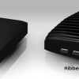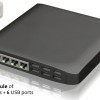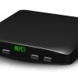
Chromebooks tendrán soporte para pads en juegos y webcams
Fri, 25 Nov 2011 12:11:32 GMT
Google por el momento tiene un apoyo bastante mínimo en lo que a Chromebook se refiere. Hasta el momento solo Samsung y Acer han decidido lanzarse y crear dos portátiles basados en Chrome. Se rumorea que HTC estaría creando el tercero, pero por ahora este es todo el apoyo que Google o los fabricantes están dando a Google en esta plataforma. Los Chromebook son extremadamente básicos, tan solo te permite conectarte a internet y poco más. Su simpleza es su fuerte y su talón de aquiles, porque aunque puedas hacer...
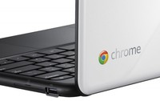
Google por el momento tiene un apoyo bastante mínimo en lo que a Chromebook se refiere. Hasta el momento solo Samsung y Acer han decidido lanzarse y crear dos portátiles basados en Chrome. Se rumorea que HTC estaría creando el tercero, pero por ahora este es todo el apoyo que Google o los fabricantes están dando a Google en esta plataforma.
Los Chromebook son extremadamente básicos, tan solo te permite conectarte a internet y poco más. Su simpleza es su fuerte y su talón de aquiles, porque aunque puedas hacer las tareas que todo el mundo hace como navegar, revisar correo o incluso gestionar fotos y videos, cuando necesites algo más o usar una cierta aplicación te puedes olvidar de ello. Este es el esfuerzo de Google, llevar todas las tareas posibles en las que necesites una aplicación a la web. ¿Incluido los juegos?
Parece que Google está trabajando en el soporte de controles para juegos como pads para que sean compatible con juegos. Eso es lo que ha revelado en una presentación el desarrollador de Google Paul Kinlan en Inglaterra, donde parece que ChromeOS será compatible también con cámaras y micrófonos, para extender la compatibilidad con otros portátiles.
Pero hablando de juegos compatibles con Chrome, por ahora son bastante simples, tanto que la mayoría son en 2D y donde reina sobre todo los juegos de simulación.
¿Puede un portátil tan simple, con un sistema operativo tan básico proporcionar juegos interesantes?
Vía: Electronista
Toshiba 32BE3: nuevos televisores con 0W de consumo en standby
Fri, 25 Nov 2011 01:07:31 GMT
Cada día que pasa, son más los fabricantes que se preocupan por el medio ambiente y por los “consumos fantasma” en sus equipos. Sí, ya sabéis, esos pilotitos rojos que quedan encendidos y no hay manera de apagarlos o el modo de espera que consume como una moto. Toshiba es una de esas marcas concienciadas y la máxima demostración de ello, es el nuevo televisor 32BE3. Con un estilizado diseño y contando con todos los adelantos de la actualidad, este 32BE3 destaca por su panel con retroiluminación LED aunque su...
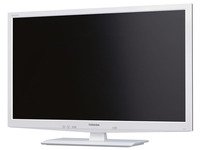
Cada día que pasa, son más los fabricantes que se preocupan por el medio ambiente y por los “consumos fantasma” en sus equipos. Sí, ya sabéis, esos pilotitos rojos que quedan encendidos y no hay manera de apagarlos o el modo de espera que consume como una moto. Toshiba es una de esas marcas concienciadas y la máxima demostración de ello, es el nuevo televisor 32BE3.
Con un estilizado diseño y contando con todos los adelantos de la actualidad, este 32BE3 destaca por su panel con retroiluminación LED aunque su resolución nativa se nos queda en unos quizás escasos 1366 × 768 píxeles. Equipado con puertos USB desde lo que reproducir contenido externo, además cuenta con función de grabación PVR y TimeShift, de modo que puedes parar las emisiones en directo para retomarlas más tarde. El equipo se completa con multitud de sensores que se adaptan a las condiciones de iluminación de la sala de modo que se ahorre energía, así como un modo de espera con 0W de consumo en espera.
Características
- Resolución nativa de 1366 × 768 píxeles
- Retroiluminación tipo LED
- PVR (Grabación de las emisiones de televisión en discos USB externos)
- Función TimeShift
- Sensores de presencia e iluminación ambiente
- Mando a distancia con botón de ahorro energético
- Aplicación de control remoto para iPhone/iPod
- 2 entradas HDMI, D5 y PC.
Precio y disponibilidad
Por el momento acaba de hacer acto de presencia en territorio japonés, donde saldrá a la venta el próximo mes de diciembre por unos 875€ al cambio. Me temo que habrá que esperar para confirmar su disponibilidad en territorio europeo.
BenQ Joybee GP2, microproyector pata negra con dock para iPhone
Thu, 24 Nov 2011 22:05:49 GMT
Seguimos con los pequeños y polifacéticos microproyectores, que parece se están poniendo de moda. En esta ocasión es la casa BenQ la que presenta el sucesor de su exitoso GP1, con el lanzamiento del nuevo equipo Joybee GP2. Con un diseño más que similar, se ha actualizado todo el interior del equipo, para ponerlo a la altura de la tecnología actual y la verdad es que ha quedado un equipo impresionante. Con iluminación basada en tecnología 3LED, más de 30.000 horas de funcionamiento y 200 lúmenes de potencia, te podrás...
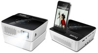
Seguimos con los pequeños y polifacéticos microproyectores, que parece se están poniendo de moda. En esta ocasión es la casa BenQ la que presenta el sucesor de su exitoso GP1, con el lanzamiento del nuevo equipo Joybee GP2. Con un diseño más que similar, se ha actualizado todo el interior del equipo, para ponerlo a la altura de la tecnología actual y la verdad es que ha quedado un equipo impresionante.
Con iluminación basada en tecnología 3LED, más de 30.000 horas de funcionamiento y 200 lúmenes de potencia, te podrás llevar este proyector literalmente en el bolsillo a cualquier lado. Podrás hacer proyecciones nocturnas en la playa, en el jardín o en el salón de casa de forma improvisada, utilizando multitud de fuentes y con calidad HD. Y es que este Yoybee GP2 cuenta con un auténtico arsenal de conexiones, que van desde HDMI hasta USB, pasando por toma para altavoces externos o puerto para PC. Todo ello sin olvidarnos de los omnipresentes iPhone/iPod, para los que cuenta con un dock en su parte superior y que te permitirá proyectar cualquier a de los vídeos que tengas almacenados en éllos.
Características
- Microproyector LED de 200 lúmenes
- Resolución nativa de 1280 x 800 píxeles
- Contraste de 2400 : 1
- Memoria interna de 2GB
- Slot para tarjetas SD
- Altavoz integrado 4W
- 500 gramos de peso (1 kilo con batería)
- Reproducción nativa de archivos MS Office y PDF
- Potente reproductor de medios integrado con soporte para MKV, FLV o ASF.
Precio y disponibilidad
Este pequeño pero matón microproyector se encuentra ya a la venta, con un precio recomendado de $549 (unos 412€ al cambio), un precio más que interesante para todos aquellos usuarios que necesiten equipos ligeros para proyecciones en movilidad.

Todo sobre la PS Vita: ¿Deberías comprarla?
Thu, 24 Nov 2011 18:04:01 GMT
Para que llegue la PS Vita todavía falta un buen tiempo. La nueva consola de Sony será lanzada oficialmente a fines de febrero del 2012 pero muchos ya se están preguntando si deberían esperar hasta ese momento y adquirir una o si ir ahora mismo a la tienda y optar por una de las que están actualmente a la venta. Hoy trataré de listarles las mejores características de la portátil para que quede un poco más claro y tengan una decisión más simple. Para empezar aquellos que hayan tenido una...
Para que llegue la PS Vita todavía falta un buen tiempo. La nueva consola de Sony será lanzada oficialmente a fines de febrero del 2012 pero muchos ya se están preguntando si deberían esperar hasta ese momento y adquirir una o si ir ahora mismo a la tienda y optar por una de las que están actualmente a la venta. Hoy trataré de listarles las mejores características de la portátil para que quede un poco más claro y tengan una decisión más simple.
Para empezar aquellos que hayan tenido una PSP en la mano notarán por las fotografías que el diseño es muy parecido a la nueva Vita. Obviamente el diseño de la anterior fue funcional y si bien la compañía japonesa modificó unas cuantas cosas, la base y lineamientos es exactamente la misma. La más grande diferencia son las dos palancas analógicas que se hicieron famosas gracias a los mandos de las diferentes PlayStation.
Hablando un poco en relación a las características de hardware que tiene el dispositivo, la consola tiene una pantalla de 5 pulgadas OLED a 16:9 con una resolución de 960x544 píxeles y soporta 30 millones de colores. Una de las nuevas características es que posee un pad trasero y multitáctil que funcionará como parte del mando de determinados juegos. Con respecto al CPU tendrá nada menos que cuatro núcleos, tendrá GPS, WiFi, Bluetooth, detección de movimiento y vendrá en dos versiones: una sin 3G a 249 euros y otra con 3G que no sólo te permitirá jugar desde cualquier lado sino también conectarse a Internet a 299 euros.
Además tendrá la posibilidad de socializar al máximo y además de tener conectividad con las redes sociales más famosas también tendrá algo llamado Near. La primera de ellas funcionará con Foursquare y le indicará a tus contactos dónde empezaste a descubrir los diferentes juegos y te informará dónde están tus amigos.
La Vita será la primera en poseer las NVG Card que son tarjetas propietarias parecidas a las Nintendo 3DS Game Cards y estarán en lugar de las ya conocidas Universal Media Discs o UMDs que eran las que usaba la PSP. Las NVG vienen en tamaños desde los 2GB hasta los 16GB y entre el 5 y el 10% del espacio de cada una de ellas se reservará para guardar información, parches y ese tipo de data.
Por ahora no se sabe mucho en relación al funcionamiento que tendrán las dos cámaras (una frontal a 320x240 píxeles y 120fps y otra trasera a 640x480 píxeles a 60fps) pero sí anunciaron que tendrán detección de cara, de cabeza y seguirán el movimiento. Sin lugar a dudas esto estará implementado con los diferentes juegos y veremos como las compañías desarrolladoras tendrán esto en cuenta para realizar sus creaciones.
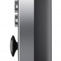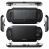
Hay muchas características de la PS Vita, sin contar ni siquiera la parte de videojuegos que será mejor a nivel resolución y cantidad de videojuegos, que son de lo más interesantes. Por ejemplo la consola de Sony permitirá tomar fotografías y verlas en una aplicación exclusiva que tendrá para reproducirlas, permitirá ubicarte a nivel locación lo que significa que no sólo vas a poder jugar con las personas que se conecten a la PSN sino también con o contra aquellos que estén más cerca tuyo, reproductor de música en la que vas a poder escuchar canciones que transfieras tanto desde el ordenador como desde la PS3, la navegación con una pantalla de 5 pulgadas (recordemos que algunas tabletas poseen pantallas de 7 pulgadas) será ideal. Esto sumado que es OLED con una resolución muy interesante y 3G que te permitirá conectarte desde cualquier lado.
Otra de los grandes caballitos de batalla por los que está apostando la gente de Sony es la realidad aumentada. Esto dependerá mucho en cómo lo implementen las empresas creadoras de videojuegos pero la potencialidad que posee es verdaderamente increíble y se puede observar en el video que adjunto en la entrada. No se puede ver demasiado, pero imaginen si se implementa con un juego de acción donde tengas que realizar misiones en la VidaReal y terminarlas en la virtual. La realidad aumentada funcionará a través de seis diferentes tarjetas que se comunicarán con la consola a través de su cámara trasera. Realmente genial.
Muchos en estos momentos están pensando si adquirir una Xbox 360, una Wii o una PS3 para estas navidades o si, en realidad, es preferible esperar hasta el 22 de febrero que se lance en Europa y América (en Asia se lanzará a fines de diciembre). La realidad es que la PS Vita promete y mucho y si bien por ahora no se confirmó una gran lista de juegos poco a poco se irán uniendo más títulos de lo más llamativo. Hay algo que es real y es que la tecnología que utiliza la Vita es nueva y no se puede comparar con su gran rival que es la Nintendo 3DS que, como se pudo confirmar con el paso del tiempo desde que se comenzó a vender, no tuvo éxito y llamó muchísimo menos la atención de lo que habíamos pensado antes que sea lanzada. Los más seguidores de Sony ya no tienen ninguna duda y adquirirá una apenas salga al mercado pero hay otros más escépticos que todavía quieren ver las primeras reseñas. Nadie los culpa, pero, como dije, promete y mucho.
La plataforma Cedar Trail de Intel retrasada nuevamente
Thu, 24 Nov 2011 15:11:40 GMT
La nueva generación de chips Intel Atom, de plataforma Cedar Trail, parece haber sido retrasada una vez más, para sorpresa de todos. La nueva serie de CPUs de consumo mínimo, orientadas a dispositivos portátiles y móviles le está dando ciertos problemas a Intel, que se ha visto obligada a aplazar su lanzamiento por segunda vez, perdiéndose la época navideña. El retraso parece deberse a algún tipo de contratiempo con los drivers gráficos para los procesadores Atom N2600 y N2800, que ha derivado en la pérdida de soporte tanto para sistemas...
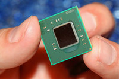
La nueva generación de chips Intel Atom, de plataforma Cedar Trail, parece haber sido retrasada una vez más, para sorpresa de todos. La nueva serie de CPUs de consumo mínimo, orientadas a dispositivos portátiles y móviles le está dando ciertos problemas a Intel, que se ha visto obligada a aplazar su lanzamiento por segunda vez, perdiéndose la época navideña. El retraso parece deberse a algún tipo de contratiempo con los drivers gráficos para los procesadores Atom N2600 y N2800, que ha derivado en la pérdida de soporte tanto para sistemas de 64-bit como DirectX 10, que los convierte en una alternativa inviable a estas alturas. Al no pasar las pruebas requeridas para la certificación WHQL, Intel no tendría unos controladores aprobados por Microsoft, y por lo tanto los OEM y ODM no podría lanzar al mercado estos productos.
La nueva fecha de lanzamiento de los procesadores está fijada para los últimos días de diciembre, con lo que los nuevos dispositivos que incorporen estos procesadores no verían la luz, al menos, hasta mediados de enero, o incluso febrero de 2012. La buena noticia al respecto, al menos para la compañía, es que el mercado de Netbooks y Nettops parece estar un poco estancado, de modo que este pequeño retraso no supone un cambio de planes muy agresivo para los fabricantes que implementan las soluciones de Intel, aunque sí es posible que obligue a revisar otras líneas de producto, como los esperados Cloverview, serie de procesadores especialmente diseñados para tablets.
Los Atom N2600 y Atom N2800 son los procesadores de bajo consumo más interesantes de Intel, con unas cargas termales extremadamente bajas y un rendimiento bastante aceptable, con frecuencias entre 1.6 y 1.83Ghz, con modos turbo hasta 2.13Ghz. Los chips de 32nm serían capaces de realizar tareas bastante exigentes sin sufrir tanto como anteriores generaciones, que estaban relegadas a dispositivos de muy baja productividad, y que se han quedado relativamente extintas ante otras soluciones, como las tablets, con procesadores ARM aparentemente muy competentes. Son bastantes los fans de estos pequeños netbooks los que esperaban con ansia la nueva remesa de dispositivos de plataforma Cedar Trail, pero por este infortunio de Intel tendrán que esperar al menos, un mes más para ver como los pequeños y matones portátiles llegan al mercado.
Rumores de Kinect integrado en TV
Thu, 24 Nov 2011 09:58:15 GMT
Si no fuese suficiente tener Kinect específico para Windows para el año que viene y entre todos las modificaciones, aplicaciones y juegos compatibles con este pequeño aparato de Microsoft, ya se empieza a hablar de las futuras pantallas de TV que integrarán Kinect. Los primeros rumores llegan de la mano de The Daily, que comenta como Microsoft tiene entre planes crear las primeras pantallas de TV con Kinect integrado, algo que no quiere decir que Microsoft ahora vaya a fabricar pantallas de TV, si no que estarían investigando como integrar...
Si no fuese suficiente tener Kinect específico para Windows para el año que viene y entre todos las modificaciones, aplicaciones y juegos compatibles con este pequeño aparato de Microsoft, ya se empieza a hablar de las futuras pantallas de TV que integrarán Kinect.
Los primeros rumores llegan de la mano de The Daily, que comenta como Microsoft tiene entre planes crear las primeras pantallas de TV con Kinect integrado, algo que no quiere decir que Microsoft ahora vaya a fabricar pantallas de TV, si no que estarían investigando como integrar estos dos aparatos que ya están presente en millones de casas, en un solo producto, y de ahí licenciarlo a otros fabricantes más grandes de TV.
Parece que los primeros fabricantes interesados han sido Vizio que por ahora solo vende en EE.UU. y Sony, que si lo sumamos a las declaraciones del CEO de Sony hace unos días de que están trabajando en un nuevo tipo de TV, bueno, ata cabos. ¿Una pantalla que integra un control por movimiento y por voz?
Kinect en todos lados
Kinect no solo ha logrado ser un éxito en videojuegos, este aparato puede permitir a Microsoft a aumentar sus servicios de mensajería en muchísimos lugares, tan solo piensa en todas estas pantallas de TV que han intentado integrar servicios de mensajería como Skype, no han funcionado muy bien porque nadie se compra una pantalla de TV porque integra Skype. Pero so ya tienes tu TV, tu Xbox 360 y Kinect, ahí tienes un servicio de mensajería para Live Messenger o para Skype, ahora que es parte de Microsoft.
Más Kinects, más Xbox que finalmente se traduce en más poder en la industria del entretenimiento en Microsoft.
KEISOKU GIKEN UDR-40S-DV: grabador a 8K sin compresión
Wed, 23 Nov 2011 23:00:16 GMT
El último equipo presentado por la japonesa KEISOKU GIKEN nos viene como anillo al dedo al respecto del último artículo recientemente publicado sobre las 4K y los sistemas a 8k. Y es que el UDR-40S-DV, es uno de los poquísimos equipos existentes en el mercados capaz de grabar a resoluciones de 8K sin compresión. Este ultimo dato es el más importante, puesto que en la actualidad y dado el impresionante caudal de datos que supone la grabación de señales a 8K, la práctica totalidad de equipos de grabación disponibles utilizan...
El último equipo presentado por la japonesa KEISOKU GIKEN nos viene como anillo al dedo al respecto del último artículo recientemente publicado sobre las 4K y los sistemas a 8k. Y es que el UDR-40S-DV, es uno de los poquísimos equipos existentes en el mercados capaz de grabar a resoluciones de 8K sin compresión.
Este ultimo dato es el más importante, puesto que en la actualidad y dado el impresionante caudal de datos que supone la grabación de señales a 8K, la práctica totalidad de equipos de grabación disponibles utilizan algún algoritmo de comprensión para por un lado, conseguir tamaños de archivo más o menos manejables y por otra, para no necesitar un equipo “de la NASA” para poder procesar la señal así tratada.
Este UDR-40S-DV es capaz no sólo de reproducir, sino también grabar señales 8k x 4k sin compresión alguna. Equipado con un link DVI-Dual Chanel Link de 8ch, pocas señales habrá que se le resistan al equipo. Por poder, puede incluso ser utilizado para grabar una señal “stereo” 3D de 4K y cuenta con posibilidad (en el 2012) de añadirle una tarjetea de conexionado a 10GbE I/F. Vamos, el sueño húmedo de cualquier purista de la imagen, que seguramente sólo estará disponible en entornos profesionales de edición y producción de alta gama. Sobre precios, casi mejor ni preguntar… pero os dejo con un interesante vídeo sobre los nuevos sistemas de transmisión de televisión Ultra HD que nos esperan a la vuelta de la esquina
Kinect disponible para Windows a principios del 2012
Wed, 23 Nov 2011 21:02:21 GMT
Kinect, que vio la luz en noviembre del 2010 y fue lanzada por Microsoft exclusivamente para la Xbox 360, parece que, poco a poco, comenzará a expandirse ya que la compañía de las ventanitas anunció que lanzará un hardware de Kinect especialmente para Windows. ¿Querían expansión en su máxima potencia? Aquí la tienen. Este nuevo dispositivo de hardware estará optimizado exclusivamente para escenarios para PC y, además, estará disponible muy pronto. Si todo sale bien y las fechas se cumplen lo tendremos a principios del 2012. Los rumores estaban dando...
Kinect, que vio la luz en noviembre del 2010 y fue lanzada por Microsoft exclusivamente para la Xbox 360, parece que, poco a poco, comenzará a expandirse ya que la compañía de las ventanitas anunció que lanzará un hardware de Kinect especialmente para Windows. ¿Querían expansión en su máxima potencia? Aquí la tienen.
Este nuevo dispositivo de hardware estará optimizado exclusivamente para escenarios para PC y, además, estará disponible muy pronto. Si todo sale bien y las fechas se cumplen lo tendremos a principios del 2012. Los rumores estaban dando vueltas hace un tiempo y ahora, a través de un post publicado por Craig Eisler, el Kinect Manager, respondió que eran ciertos y que están desarrollando este dispositivo del que les hablo.
Para fabricar el dispositivo para PC están optimizando el que existe actualmente para Xbox 360. Para empezar acortarán el cable USB para que no tengan incidencia en el rango de uso y que por ese motivo se generen posibles fallas.
El nuevo firmware permitirá que Kinect mejore la profundidad de lectura para poder detectar movimientos a 50 centímetros y no se pierda ningún tipo de precisión. Esto lo llaman Near Mode y la empresa pretende que, con esto, se programen toda una nueva gama de aplicaciones que anteriormente eran imposibles por esta falta que tenía la tecnología. Según Eisler esta es una de las características más pedidas por los desarrolladores y compañías que están participando en la creación de aplicaciones para Kinect.
Sin lugar a dudas esto cambiará muchísimo lo se que se conoce de Kinect, el desarrollo de videojuegos y, sobre todas las cosas, la cantidad de usuarios que lo usarán. Como sabemos, que en una casa haya una PC con Windows es lo más normal del mundo. De hecho es el sistema operativo, por mucho, más usado del mundo. No así con la Xbox 360 que si bien es muy utilizada no es común que esté en los hogares. Esto hará que la cantidad de personas que lo tengan sea muchísimo mayor y, por ende, las empresas que se interesarán por la plataforma será más grande. ¿En qué repercutirá? Más y mejores juegos. Buena movida por parte de Microsoft, sin lugar a dudas.
El futuro con la electrónica es hablarle
Sat, 26 Nov 2011 12:57:41 GMT
Hemos recorrido muchos años en la electrónica y en la informática como para quedarnos estancados en los teclados y ratones. Desde el inicio del ordenador personal siempre hemos tenido los mismos elementos: una pantalla, una CPU, un teclado y un ratón para controlar nuestro PC. Si debe de existir un futuro que ya está empezando a brillar ese es el del reconocimiento por voz. Aunque sistemas de reconocimiento por voz existen desde hace decadas, nunca han sido muy buenos compañeros para la productividad, solo porque las versiones iniciales de aplicaciones...
Hemos recorrido muchos años en la electrónica y en la informática como para quedarnos estancados en los teclados y ratones. Desde el inicio del ordenador personal siempre hemos tenido los mismos elementos: una pantalla, una CPU, un teclado y un ratón para controlar nuestro PC. Si debe de existir un futuro que ya está empezando a brillar ese es el del reconocimiento por voz.
Aunque sistemas de reconocimiento por voz existen desde hace decadas, nunca han sido muy buenos compañeros para la productividad, solo porque las versiones iniciales de aplicaciones de ofimática capaces de transcribir tu voz a la pantalla eran bastante arcaicos, fallaban bastante y en algunas ocasiones ciertos acentos no los reconocía, y si le añadimos que debías hablarle al sistema despacio, palabra por palabra, no era un buen sistema para hacer algo rápido.
Pero aquí estamos, a finales de 2011 y con una gran explosión de aplicaciones capaces de reconocer la voz. Empezando por Siri en iPhone 4S, cuya comprensión del lenguaje (inglés, francés y alemán por ahora) es increíble. No me cansaré nunca de destacar que Siri es capaz de entender frases naturales, no es necesario hablarle como si fuese un perro, dando ordendes básicas como “llamar”, puedes decirle “quiero llamar a mi doctor” y automáticamente lo hará. Siri, cuando sea capaz de llegar a lenguas como el español y el chino, logrará que el iPhone multiplique sus ventas.
Pero no solo Siri, en Xbox tenemos el sistema de reconocimiento por voz usando Kinect, el cual es capaz de reconocer muy pocos comandos, pero ahí estas, frente a tu pantalla de televisión y dándo ordendes por voz a tu consola.
Windows Phone 7 incluye la tecnología de reconocimiento de voz de TellMe, que por cierto estos días está dando que hablar por unas declaraciones de Craig Mundie comparando a TellMe con Siri, algo que está muy lejos de ser lo mismo, aunque TellMe no está nada mal he de decir, y reconoce el español sin problemas, algo que Siri por ahora no es capaz.
Android también incluye un sistema de reconocimiento por voz, aunque solo reconoce la voz cuando quieres rellenar algún campo, no reproduce acciones por defecto, para hacer algo como Siri debes de descargar o comprar alguna aplicación aparte, aunque algunas no están funcionando muy bien.
Por alguna razón ninguna aplicación de reconocimiento de voz ha logrado colarse en algún sistema operativo de la forma que lo ha hecho en los móviles. Quizá sea que el reconocimiento de voz se asocia más a una función de ayuda para descapacitados que ya incluyen sistemas operativos, pero al nivel que se espera encontrar como lo hacemos en algunos terminales o videoconsolas no.
Está claro, la tendencia al futuro más cercano es hablar a tu teléfono, a tu ordenador, a tu videoconsola. Hablar y ser entendido que es lo más importante, lograr que un software sea capaz de entender lo que estás diciendo, de la forma que lo estás diciendo y hacerlo bien no es nada fácil. Ahora multiplica estas acciones por el número de idiomas y de dialectos y acentos que existen en todo el mundo. El trabajo que hay detrás de estas aplicaciones es titánico.
Ordenador, ¡hazme un sandwich!
Convierte tu monitor en invisible en 6 pasos
Fri, 25 Nov 2011 23:01:58 GMT
Si te gustan las películas de espías o si siempre te has querido sentir como James Bond, entonces nunca has tenido más fácil que ahora, el lograr que tu monitor se convierta en el gadget preferido por cualquier espía que se precie. Todo gracias al ingenio de un usuario de Internet que se hace llamar Dimovi y que ha revelado los pasos necesarios para ellos en la famosa web Instructables. El truco consiste en retirar del interior del monitor una de las “capas” que componen la pantalla, de forma que...
Si te gustan las películas de espías o si siempre te has querido sentir como James Bond, entonces nunca has tenido más fácil que ahora, el lograr que tu monitor se convierta en el gadget preferido por cualquier espía que se precie. Todo gracias al ingenio de un usuario de Internet que se hace llamar Dimovi y que ha revelado los pasos necesarios para ellos en la famosa web Instructables.
El truco consiste en retirar del interior del monitor una de las “capas” que componen la pantalla, de forma que ésta se vuelva totalmente invisible para todo el mundo. Bueno, para todo el mundo no, puesto que tú, con unas gafas especiales podrás ver perfectamente lo que hay en el monitor. El proceso consta de tan sólo seis sencillos pasos (para los aficionados al bricolaje, claro) siendo necesario tan sólo retirar el filtro polarizado del televisor y adaptarlo a cualquiera de las típicas gafas 3D que se suelen conseguir en los cines en tres dimensiones. Sólo resta cambiar sus “lentes”, por el film polarizado que le retirarse al monitor y listo. Tu y sólo tu podrás ver un monitor, que para el común de los mortales simplemente proyectará una pantlla en blanco y totalmente vacía. Como no hay nada como un vídeo para ver estos “inventos”, aquí os dejo uno donde se puede apreciar claramente lo bien que funciona el sistema.
TGIF: Samsung y su anuncio contra los usuarios de Apple
Fri, 25 Nov 2011 21:02:24 GMT
Sabemos que Samsung y Apple están en una pelea complicada en la que las patentes son las protagonistas. Un verdadero lío de tira y afloje que, al parecer, no terminará nunca. Es lamentable porque, como dice Eric Schmidt de Google, lo único que hacen estas cosas es frenar la innovación y los afectados, en este caso, no sólo somos nosotros sino también la tecnología en general. Sea como sea, las compañías siguen lanzando productos y, con esos productos, publicidades que promocionan sus características. Bueno, casi siempre promocionan sus características. El...
Sabemos que Samsung y Apple están en una pelea complicada en la que las patentes son las protagonistas. Un verdadero lío de tira y afloje que, al parecer, no terminará nunca. Es lamentable porque, como dice Eric Schmidt de Google, lo único que hacen estas cosas es frenar la innovación y los afectados, en este caso, no sólo somos nosotros sino también la tecnología en general.
Sea como sea, las compañías siguen lanzando productos y, con esos productos, publicidades que promocionan sus características. Bueno, casi siempre promocionan sus características. El último anuncio de Samsung para presentar el Samsung Galaxy SII no hace eso sino que se encarga, durante un minuto, a pegarle al iPhone y a las personas fanáticas que van a hacer cola a la espera de los dispositivos.
Primero que nada la publicidad es una verdadera risa. Hay algunos detalles, como cuando uno dice “Nunca podría tener un Samsung, soy un creativo” y el otro le responde “Dude, eres un barista” (que son las personas encargadas de crear nuevas bebidas a partir de la combinación del café). Pero más allá que la publicidad es verdaderamente genial, el fin de la misma, ¿se cumple? Conmigo no. Particularmente ver que les tiran caca a personas que hacen fila para adquirir el último lanzamiento de Apple (aunque yo nunca lo haría) no me parece demasiado bien. Después de todo, quieres que ellos se vayan para tu empresa, ¿no?
¿Qué piensan ustedes del nuevo anuncio de Samsung para el Galaxy SII?
¿Qué es HbbTV? jubilando al Teletexto y añadiendo contenido multimedia a tu TV
Fri, 25 Nov 2011 18:08:38 GMT
Hoy hemos conocido la noticia de que la industria audiovisual española ha llegado por fin a un consenso sobre el estándar de televisión híbrida (HbbTV) que comenzará a implantarse en la mayoría de cadenas españolas en los próximos meses. Pero ahora nos surge la gran duda: ¿Qué es eso de la HbbTV? La teoría nos dice que es un nuevo estándar de transmisión de datos incrustados en la señal de la TDT, que nos permitirá interactuar con todos los contenidos digitales que ofrezca la cadena de televisión (como televisión a...
Hoy hemos conocido la noticia de que la industria audiovisual española ha llegado por fin a un consenso sobre el estándar de televisión híbrida (HbbTV) que comenzará a implantarse en la mayoría de cadenas españolas en los próximos meses. Pero ahora nos surge la gran duda: ¿Qué es eso de la HbbTV?
La teoría nos dice que es un nuevo estándar de transmisión de datos incrustados en la señal de la TDT, que nos permitirá interactuar con todos los contenidos digitales que ofrezca la cadena de televisión (como televisión a la carta, votaciones en directo en concursos, acceso a información en tiempo real sobre el programa que estamos viendo y un largo etcétera) . Se basa en la utilización de otros tres estándares, a saber:
- Transporte de los datos por la señal DVB (TDT)
- Utilización del perfil de navegación del Open IPTV Forum
- Lenguaje de programación CE-HTML
Pero hablando en claro y sin rodeos, podemos decir que la HbbTV es el Teletexto del futuro. Con unas televisiones cada vez más evolucionadas, que incluyen conexión a Internet y con las cadenas subiendo a la red cada vez más y más contenido, era ilógico que a estas alturas de la película (en pleno siglo XXI) todavía estuviéramos hablando de un sistema como el teletexto, que como su propio nombre indica, sólo permite comunicación unidireccional (desde la cadena al espectador) y encima en modo texto.
El HbbTV viene a jubilar al teletexto con la introducción de audio, vídeo y contenido interactivo en la señal de televisión. De hecho, en España varias cadenas lo están implantando en periodo de pruebas (Tele 5 y TV3 desde el verano). En el HbbTV, la cadena emite una señal de datos en el canal de TDT que estemos viendo, que es decodificada por nuestro televisor. En ella, pueden ir texto, fotos, etc; pero lo más importante es la incrustación de direcciones de Internet que den acceso a contenidos digitales multimedia. Como nuestro televisor estará conectado a la Internet (sólo funciona en los últimos modelos de las distintas marcas), con sólo pulsar en dicho enlace, accederemos directamente a esos contenidos multimedia. Contenidos que pueden ser desde programación de televisión a la carta, hasta videoclub, pasando por datos de los actores, música o director de la película, partido de fútbol o carrera de motos que estemos viendo. Todo esto sin dejar de ver en ningún momento la programación en directo de la cadena, que será reescalada a un pequeño recuadro en uno de los laterales (una especie de PiP).
En definitiva, es un teletexto evolucionado, que aúna información de audio, vídeo y texto, de forma interactiva y en el que el usuario puede interaccionar activamente a través de votaciones, concursos o simplemente televisión a la carta.
Samsung podría abandonar los Netbooks en 2012 según aumenta el protagonismo de las tablets
Fri, 25 Nov 2011 15:08:53 GMT
Samsung es quizás la compañía coreana más prolífica en occidente en cuanto dispositivos móviles, con docenas de modelos de smartphones y una amplia gama de tablets, pero también es uno de los grandes fabricantes de ordenadores portátiles de todo tipo, desde los más altos de gama hasta los más sencillos netbooks, pasando por la desafortunada serie 5, conocidos popularmente como Chromebooks. La firma, que está disfrutando de un éxito más que notable en el campo de la telefonía móvil y destaca también entre los fabricantes de tablets, estaría considerando abandonar...
Samsung es quizás la compañía coreana más prolífica en occidente en cuanto dispositivos móviles, con docenas de modelos de smartphones y una amplia gama de tablets, pero también es uno de los grandes fabricantes de ordenadores portátiles de todo tipo, desde los más altos de gama hasta los más sencillos netbooks, pasando por la desafortunada serie 5, conocidos popularmente como Chromebooks. La firma, que está disfrutando de un éxito más que notable en el campo de la telefonía móvil y destaca también entre los fabricantes de tablets, estaría considerando abandonar la producción de Netbooks, según un supuesto mensaje enviado a sus socios comerciales, comenzando por los modelos básicos de 10 pulgadas ya el próximo año.
La nueva estrategia de Samsung para los años venideros parece pasar por deshacerse de peso muerto, y dado el descenso en las ventas de netbooks, especialmente de 10 pulgadas e inferiores, las altas instancias de la compañía habrían decidido comenzar por eliminar estos de su catálogo, dejando únicamente las versiones de 11.6 y 12 pulgadas, que se saldrían de la denominación netbook. Esta visión de futuro no implicaría eliminar por completo el uso de procesadores “de tipo netbook”, como los Intel Atom, o AMD Llano serie E, o Neo, sin embargo tendría como consecuencia un abandono absoluto de la plataforma netbook, para centrarse no solo en dispositivos móviles, sino también en otras líneas de ordenadores portátiles, también de bajo consumo pero con una “categoría superior”.
De confirmarse, Samsung sería el primero de los grandes fabricantes de ordenadores personales en dejar el mercado de los netbook, aunque también podrían estas bastante cerca de llegar a la misma conclusión otros como Asus y Acer, que también están experimentando un inusitado auge en el interés por sus tablets, lo que desembocaría finalmente en un paulatino ostracismo de la plataforma en beneficio de otro tipo de dispositivos de ocio/productividad personal. El denominador común de este nuevo rumbo sería sin lugar a dudas el dominio de las tablets, que están reemplazando a los netbooks en el papel de equipos compactos y ligeros para tareas sencillas, que fue en primer lugar el origen de la plataforma.
Pero ¿qué pasa con otras plataformas menos exitosas? Los Chromebooks han resultado ser, en los pocos meses que llevan en el mercado, un auténtico desastre en cuanto a aceptación y ventas, con un abanico de consumidores objetivo bastante limitado y evidentes problemas en la estrategia comercial encabezados por un precio demasiado elevado y la necesidad imperativa de una conexión perpetua a internet. Si se abandonan productos como los netbooks, que han resultado tan eficientes en el mercado y han popularizado la informática a nivel personal hasta el extremo, los chromebooks, por extensión, también deberían estar condenados, a menos que se aúnen esfuerzos para hacerlos más atractivos al consumidor medio.
España da el paso para adoptar la televisión HbbTV
Fri, 25 Nov 2011 10:04:59 GMT
Aun con la televisión digital con la sensación que se ha hecho medio trabajo bien en su implementación en España, cuando en realidad se debió adaptar directamente el estándar TDT-HD, ahora se empieza a hablar del siguiente estandar en transmisión de televisión para España, el HbbTV. El Ministerio de Industria Español y la Asociación de Empresas de Televisión Interactiva que engloba tanto a las emisoras de televisión como a empresas de electrónica relativas a la televisión, han aprobado un documento con los primeros detalles de la adopción, que hasta donde...
Aun con la televisión digital con la sensación que se ha hecho medio trabajo bien en su implementación en España, cuando en realidad se debió adaptar directamente el estándar TDT-HD, ahora se empieza a hablar del siguiente estandar en transmisión de televisión para España, el HbbTV.
El Ministerio de Industria Español y la Asociación de Empresas de Televisión Interactiva que engloba tanto a las emisoras de televisión como a empresas de electrónica relativas a la televisión, han aprobado un documento con los primeros detalles de la adopción, que hasta donde hemos buscado no hay mucha más información, ya que ni el Ministerio ni esta asociación han publicado nada acerca de la adopción, que según informa Expansión se incorporaría en los próximos meses.
El formato HbbTV es un sistema que básicamente permite a los canales no ya solo mostrar una señal de vídeo, si no que su emisión sería mucho más dinámica. Se necesita una televisión conectada a internet o un descodificador/adaptador que también se pueda conectar. Es muy parecido a sistemas que se pueden encontrar en PlayStation 3 o en Xbox, una especie de página web donde el canal pone su programación o vídeos a tus disposición, en vez de horas y horas continua de vídeo sin parar, tu eliges que quieres ver.
Aunque está más pensado para que se siga una emisión de televisión y que puedas interactuar con lo que va ocurriendo en la pantalla, como hacer búsquedas relacionadas con lo que estás viendo, compartir en redes sociales, juegos y claro, publicidad relacionada.
Sony presenta el proyector de tiro más corto del mercado
Thu, 24 Nov 2011 23:04:09 GMT
Aunque pudiera parecer lo contrario, Sony no sólo se centra en equipos de proyección de gama alta (como sus modelos 4K), sino también en equipos de “tiro corto”, especialmente diseñados para las necesidades específicas de academias, centros de enseñanzas y empresas con reducidos espacios para salas de conferencia. Con dichas aplicaciones en mente, acaban de presentar los nuevos modelos VPL-SW535 y VPL-SX535, dos de los proyectores de tiro más corto del mercado, puesto que son capaces de lograr una pantalla de 70 pulgadas desde tan sólo 42 centímetros de distancia....

Aunque pudiera parecer lo contrario, Sony no sólo se centra en equipos de proyección de gama alta (como sus modelos 4K), sino también en equipos de “tiro corto”, especialmente diseñados para las necesidades específicas de academias, centros de enseñanzas y empresas con reducidos espacios para salas de conferencia. Con dichas aplicaciones en mente, acaban de presentar los nuevos modelos VPL-SW535 y VPL-SX535, dos de los proyectores de tiro más corto del mercado, puesto que son capaces de lograr una pantalla de 70 pulgadas desde tan sólo 42 centímetros de distancia.
Para lograr distancias de proyección tan cortas, se utiliza un complejo sistema de espejos que permite acortar notablemente el “tiro” del equipo, sin que se vea afectada lo más mínimo ni la calidad de imagen, ni el brillo o luminosidad.
VPL-SW535
- Resolución nativa de 1.280 × 800 píxeles
- 3.000 lúmenes de brillo
- Proyección de pantalla de 70 pulgadas a 42cm de distancia
- Capaz de lograr pantallas de entre 70 y 130 pulgadas
- Consumo de 290 W
- Altavoces integrados de 1W
- Tomas HDMI, RGB, RCA
VPL-SX535
- Resolución nativa de 1024 × 768 píxeles
- 3.000 lúmenes de brillo
- Proyección de una pantalla de 60 pulgadas a unos 50 cm de distancia
- Capaz de lograr pantallas de entre 60 y 110 pulgadas
- Consumo de 310W
- Altavoces integrados de 1W
- Tomas HDMI, RGB, RCA
Precios y disponibilidad
Ambos equipos estarán disponibles en los próximos meses. En el caso del VPL-SW535, saldrá a mediad diciembre por un precio de 2230€ al cambio, mientras que el VPL-SX535 estará disponible a partir de enero de 2012 con un precio recomendado de 2100€.
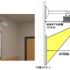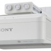
VIA ARTiGO A1150: barebone que cabe en la palma de la mano
Thu, 24 Nov 2011 20:27:42 GMT
VIA, la compañía detrás de los infames chipsets que asolaban placas base allá por inicios de milenio, y fabricante de procesadores de mínimo consumo, anunciaba ayer su última pieza de hardware, el pequeño kit DIY ARTiGO A1150, un pequeñísimo barebone con el que podremos construir un interesante PC de sobremesa, para cualquier tipo de uso básico. El diminuto ordenador, uno de los más pequeños que he podido ver, está compuesto por una placa Pico-ITX, y tiene un volumen inferior a 1 litro. Con un procesador de 64-bit de la serie...
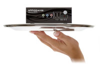
VIA, la compañía detrás de los infames chipsets que asolaban placas base allá por inicios de milenio, y fabricante de procesadores de mínimo consumo, anunciaba ayer su última pieza de hardware, el pequeño kit DIY ARTiGO A1150, un pequeñísimo barebone con el que podremos construir un interesante PC de sobremesa, para cualquier tipo de uso básico. El diminuto ordenador, uno de los más pequeños que he podido ver, está compuesto por una placa Pico-ITX, y tiene un volumen inferior a 1 litro. Con un procesador de 64-bit de la serie Eden de VIA que incorpora dos núcleos a una frecuencia de 1Ghz, el ARTiGO puede convertirse en un perfecto acompañante para la HDTV de nuestro salón, al ser capaz de descomprimir prácticamente cualquier formato de video en alta definición.
Con unas medidas muy contenidas de 14.6 x 9.9 x 5.2cm quizás no quepa en todas las palmas, pero es incluso más pequeño que un cuaderno de notas de tipo media cuartilla, algo que si conocemos los últimos smartphones del mercado puede no sorprendernos, pero que resulta un auténtico logro en máquinas de arquitectura x86. La CPU Via Eden X2 junto a la GPU Via Chrome 9 y el procesador multimedia VIA VX900H crean un conjunto todo en uno capaz de ofrecer un rendimiento multimedia excepcional dado el minúsculo formato, además de una gran conectividad con sus puertos VGA y HDMI para imagen y sonido, Gigabit Ethernet y adaptador Wi-Fi N opcional para la conexión a redes, y tres puertos USB 2.0 y una entrada MicroUSB para conectar periféricos externos. Al tratarse de un equipo barebone, el ARTiGO A1150 viene con los componentes básicos, y hará falta añadirle memoria RAM, y almacenamiento.
Especificaciones técnicas
-
CPU: Via Eden X2 1Ghz, FSB 800Mhz, 2MB caché L2
-
RAM: 1 zócalo SODIMM DDR3-1066Mhz hasta 4GB
-
GPU: Via Chrome 9, descompresión de video por hardware, DirectX9
-
Almacenamiento: 1 bahía 2,5” para HDD o SSD, Lector SD opcional
-
Conectividad: Puerto Ethernet Gigabit (VIA VT6130G), Wi-Fi 802.11b/g/n opcional
-
Medidas y peso: 146 x 52 x 99 mm, 600 gramos (barebone)
En su slot de memoria RAM podremos insertar un módulo de hasta 4GB de tipo SODIMM — memoria portátil — y tendremos la posibilidad de instalar un disco duro o unidad SSD de 2.5 pulgadas como principal unidad de almacenamiento, en la que podremos instalar virtualmente cualquier sistema operativo compatible con procesadores x86-64, como Windows 7, o alguna distribución de Linux ligera o destinada a tareas multimedia.
Disponibilidad y precio
VIA ha lanzado ya este pequeño kit para construir nuestro mini PC de sobremesa en los Estados Unidos, y pronto estará disponible también en otras regiones. Desafortunadamente, y aunque su tamaño es diminuto, su precio no lo es, y para adquirirlo tendremos que desembolsar más de US$250, cifra que se antoja bastante alta para un sistema que todavía debemos completar añadiendo más hardware. El concepto es inmejorable, y puede convertirse en un magnífico sistema de sobremesa multimedia, pero el precio no acompaña en esta ocasión para que se convierta en uno de “los más deseados” en las listas de compras para navidad.
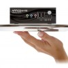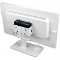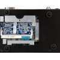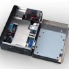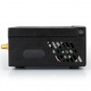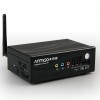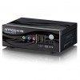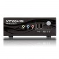
Exceleram ofrece nuevos módulos DDR3 de 8GB a un precio muy bajo
Thu, 24 Nov 2011 17:07:20 GMT
En Europa nos hemos malacostumbrado a unos precios realmente económicos en cuanto a memoria RAM, siempre que esta sea de generación actual, pero el continente americano no tiene tanta suerte, y a menudo se enfrenta a un desembolso casi prohibitivo en el caso de los módulos de alta capacidad. Exceleram, fabricante alemán de memoria para ordenadores personales quiere cambiar el panorama de este mercado, y para ello ha comenzado a ofrecer unos nuevos módulos con 8GB de capacidad prácticamente a la mitad del precio de venta al público que memorias...
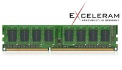
En Europa nos hemos malacostumbrado a unos precios realmente económicos en cuanto a memoria RAM, siempre que esta sea de generación actual, pero el continente americano no tiene tanta suerte, y a menudo se enfrenta a un desembolso casi prohibitivo en el caso de los módulos de alta capacidad. Exceleram, fabricante alemán de memoria para ordenadores personales quiere cambiar el panorama de este mercado, y para ello ha comenzado a ofrecer unos nuevos módulos con 8GB de capacidad prácticamente a la mitad del precio de venta al público que memorias de otras marcas. El módulo parece el más básico del mercado, ya que llega sin ningún tipo de lujo como disipadores u optimización para configuraciones multi-canal, pero es un recorte que seguro que muchos consumidores están dispuestos a asumir por tan generosa reducción en el precio, que los sitúa en US$49.99.
Si bien por estos lares los precios de los kits o módulos de esta capacidad ya rondan el mismo precio, Estados Unidos y Latinoamérica deben pagar de media algo más de 100 dólares si quieren adquirir esa cantidad de memoria en un solo stick, algo bastante inconveniente si necesitamos — o deseamos — una cantidad importante de RAM. Las nuevas Exceleram E30200A ofrecen una frecuencia DDR3-1333 Mhz y una latencia CL9, bastante ajustada para módulos de esta categoría. Funcionan al mismo voltaje que el resto de RAM DDR3 del mercado, 1.5V, y vienen, como decía, sin lujos de ningún tipo, esencialmente para darnos la oportunidad de crear conjuntos quad-channel de hasta 32GB, por un precio bastante inferior al que costaría un kit de otra marca, desde $400 en el caso de cuatro módulos.
Esto responde a una estrategia comercial muy agresiva, que aprovecha los descensos de costes experimentados por los fabricantes de chips DRAM, y corta los beneficios brutos en aras de lograr un número mayor de ventas. Por supuesto no estamos hablando de ningún kit Corsair o Kingston, pero el rendimiento básico que ofrecen la velocidad y latencia de estos módulos será más que suficiente para los presupuestos ajustados. En cuanto a fiabilidad y estabilidad, Exceleram se enorgullece de ofrecer la máxima calidad en sus productos, y esa fue la clave que los llevó a separarse de su otrora compañía principal, Mushkin, lo que debería ser un índice del compromiso de esta firma. La nueva memoria RAM Exceleram estará disponible en breve en los Estados Unidos. Ahora solo falta que el resto de fabricantes tomen ejemplo, y por fín veamos un precio justo tanto para este tipo de memoria volátil, como para las carísimas unidades de almacenamiento sólido.
Fujifilm X-S1: cámara bridge con un gran zoom de 26x
Thu, 24 Nov 2011 12:18:04 GMT
Fuji intenta reintentar su gama de cámaras X con la nueva X-S1, una cámara de 12 megapíxeles capaz de grabar vídeo en alta definición a 1080p y con una especial importancia en el zoom. En Fuji no se han andado con tonterías, han integrado una lente de 24mm y un gran zoom de 26 aumentos en esta cámara bridge. Incluye características interesantes como su pantalla de 3 pulgadas que puedes girar para poder ver la escena en diferentes ángulos, una opción de hacer fotos en macro con un mínimo de...

Fuji intenta reintentar su gama de cámaras X con la nueva X-S1, una cámara de 12 megapíxeles capaz de grabar vídeo en alta definición a 1080p y con una especial importancia en el zoom. En Fuji no se han andado con tonterías, han integrado una lente de 24mm y un gran zoom de 26 aumentos en esta cámara bridge.
Incluye características interesantes como su pantalla de 3 pulgadas que puedes girar para poder ver la escena en diferentes ángulos, una opción de hacer fotos en macro con un mínimo de 1 centímetro desde la lente al objeto, lo que es bastante cerca y un nuevo visor electrónico.
Pese a que no es tan versátil como una cámara DSLR o una micro cuatro tercios a la que le puedas cambiar los objetivos, esta cámara tiene su público.
Características Fujifilm X-S1
- Sensor de 12 megapíxeles
- Zoom de 26x ópticos, 24mm
- Velocidad de disparo: 10fps
- Grabación de vídeo en 1080p
- Visor electrónico
- Flash integrado
- Pantalla de 3 pulgadas
- ISO 100-12800
- Compatible con tarjetas SDXC/SDHC
- Conexión USB y HDMI
- Peso: 905 gramos
Precio y disponibilidad
Por ahora esta cámara se lanzará en Japón en diciembre, por unos 774€ o unos US$1040. Por este precio ya podrías acceder a una cámara micro cuatro tercios o tener el cuerpo de una buena DSLR, pero estas cámaras bridge lo ponen mucho más fácil a los que no quieren complicarse la vida con diferentes lentes.

 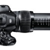
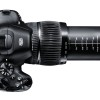
Energy Power Bar Elite, barra sonora con subwoofer inalámbrico
Thu, 24 Nov 2011 01:02:38 GMT
Hacía tiempo que no traíamos por aquí una barra sonora en condiciones, así que hoy toca el último equipo recién presentado por la casa Energy Power, su nueva barra sonora Bar Elite, un sistema todo en uno, que sacará todo lo que no es capaz de lograr tu recién comprado televisor plano. Con decodificador integrado para el sistema Dolby Digital , así como con modo 3D Surround, se convertirá en el complemento imprescindible en tu salón de casa. Con un total de 250W, incluye un sistema de altavoces de 2...
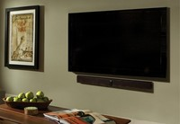
Hacía tiempo que no traíamos por aquí una barra sonora en condiciones, así que hoy toca el último equipo recién presentado por la casa Energy Power, su nueva barra sonora Bar Elite, un sistema todo en uno, que sacará todo lo que no es capaz de lograr tu recién comprado televisor plano.
Con decodificador integrado para el sistema Dolby Digital , así como con modo 3D Surround, se convertirá en el complemento imprescindible en tu salón de casa. Con un total de 250W, incluye un sistema de altavoces de 2 vías, así como un pequeño subwoofer que no necesita de cables para conectarse al sistema principal y que hará que sientas esos graves en todo su esplendor. El equipo se completa con diversas tomas de audio y mando a distancia. Eso sí, aunque cuenta con toma de audio óptica, se echa de menos una toma HDMI, tan imprescindible hoy en día.
Características
- Barra sonora con altavoces de 2 vías y 250W de potencia
- Subwoofer inalámbrico
- Decodificación Dolby Digital
- Modo Surround 3D
- Control remoto con funciones de aprendizaje
Precio y disponibilidad
Esta nueva barra sonora Energy Power Bar Elite, se encuentra ya a la venta a un precio recomendado de $599.99, unos 450€ al cambio.
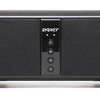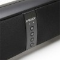 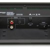
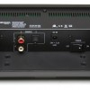
AAXA P4, el primer picoproyector LED de 80 lúmenes
Wed, 23 Nov 2011 22:02:22 GMT
Un pequeño milagro, eso es lo que ha conseguido la casa AAXA, al lograr fabricar el picoproyector más luminoso del mercado. Nos referimos al nuevo equipo AAXA P4, que con un tamaño un poco mayor al de un móvil de última generación, es capaz de lograr proyectar una pantalla de nada menos que 80 pulgadas de tamaño, en una habitación medianamente iluminada. Todo ello gracias a sus 80 lúmenes de brillo, cantidad asombrosa para un dispositivo tan pequeño. Este pico proyector se completa con unas fuertes capacidades multimedia, puesto que...
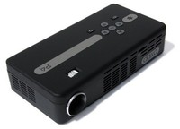
Un pequeño milagro, eso es lo que ha conseguido la casa AAXA, al lograr fabricar el picoproyector más luminoso del mercado. Nos referimos al nuevo equipo AAXA P4, que con un tamaño un poco mayor al de un móvil de última generación, es capaz de lograr proyectar una pantalla de nada menos que 80 pulgadas de tamaño, en una habitación medianamente iluminada. Todo ello gracias a sus 80 lúmenes de brillo, cantidad asombrosa para un dispositivo tan pequeño.
Este pico proyector se completa con unas fuertes capacidades multimedia, puesto que incluye en su interior un sistema Windows CE, por lo que no tendrás problema a la hora de realizar presentaciones con archivos de PowerPoint, Word o Excel. Por echarse de menos, se echamos en falta una toma HDMI imprescindible hoy en día. Aclarar que el equipo sólo cuenta con mini-VGA, vídeo compuesto y USB.
Características
- Resolución nativa de 854x480 píxeles
- Sistema operativo Windows CE
- Procesador a 750MHz
- Brillo de 80 lúmenes
- Contraste de 2000:1
- Basado en RGB LED con 15.000 horas de uso
- 1Gb de memoria interna
- Slot para SD
- Altavoz integrado de 1W
- Windows 6 CE Core
Precio y disponibilidad
Este interesante picoproyector ya está disponible para su compra on-line, a un precio de oferta de $339 (unos 260€ al cambio). Vamos, un caramelo para las próximas fiestas navideñas.
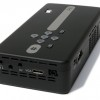